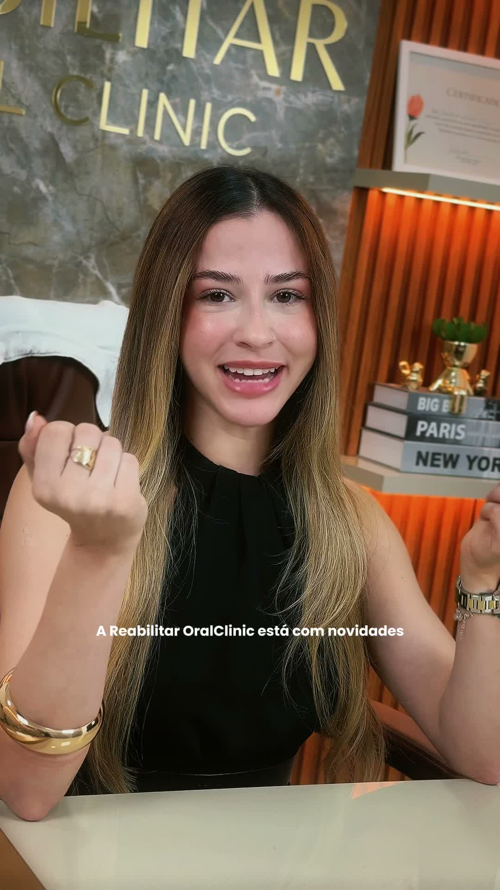
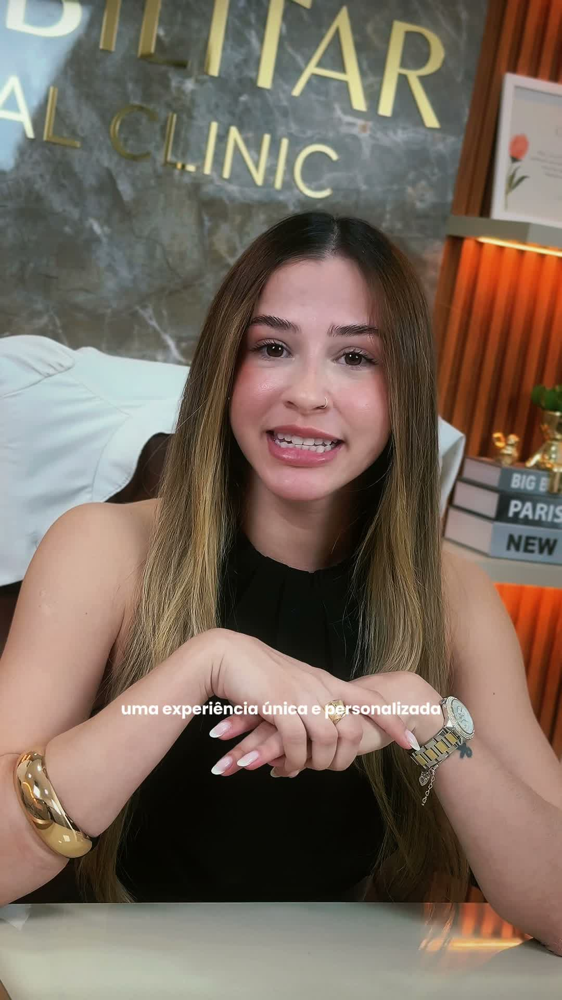

Antes Como está hoje
RF
41posts
1.271seguidores
1.280seguindo
Dr. Rodrigo Fróes | Lentes em Porcelana e Implantes
CRO-PA7798
Parauapebas - PA
Implantes Dentários • Lentes em Porcelana
Sorrisos planejados com excelência e sofisticação
Agende sua avaliação
SeguirMensagem
RotinaClínicaLentesImplantes

HARMONIZAÇÃO

LENTES
PRÓTESES
IMPLANTES
- Categoria principal aparece, mas ainda como descrição de serviço.
- A grade mistura temas e não instala uma tese imediatamente.
- A prova ainda não tem endereço próprio e contexto padronizado.